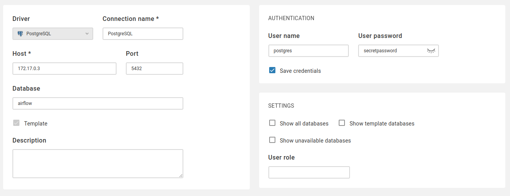

Volumes
Volumes คือ File System ที่ Docker ใช้เก็บข้อมูลสำหรับ Container เช่น เก็บข้อมูลจาก Database
Adding volumes to database
bash
docker container run \
--name mypostgres \
-d -p 5432:5432 \
-e POSTGRES_PASSWORD=secretpassword \
-v postgresdb:/var/lib/postgresql/data \
postgres
จุดสำคัญ
-vคือการระบุ Volume ที่ต้องการใช้งานกับ Database PostgreSQLpostgresdbเป็นชื่อ Docker Volume ที่ตั้งเองได้เลย/var/lib/postgresql/dataคือ Path ที่ Database เขียนข้อมูลลงไป การระบุ-v postgresdb:/var/lib/postgresql/dataหมายถึง ข้อมูลที่ Database เขียนลง/var/lib/postgresql/dataจะถูกเก็บไว้บน Host ภายใต้ Volume ที่ชื่อpostgresdb- การบริหารจัดการ Volumes ใช้กลุ่มคำสั่ง
volumeเช่น
bash
docker volume <sub-command> [options]
List Volumes
bash
docker volume ls
Inspect Volumes
bash
docker volume inspect postgresdb
หรือ ตรวจสอบจาก Container ก็ได้
bash
docker container inspect --format '{{ index .HostConfig.Binds 0 }}' mypostgres
Example 1 - Persisting Data
Create a Database Container
bash
docker container run \
--name mypostgres \
-d -p 5432:5432 \
-e POSTGRES_PASSWORD=secretpassword \
-v postgresdb:/var/lib/postgresql/data \
postgres
ตรวจสอบ Logs การ Init Database ด้วย
bash
docker container logs mypostgres
Create a Database 'airflow`
bash
docker container exec -it mypostgres psql -U postgres
จากนั้นใส่คำสั่ง
sql
CREATE DATABASE airflow;
เปลี่ยน Database มาเป็น airflow:
bash
\c airflow;
สร้างตาราง
sql
CREATE TABLE test(
id SERIAL NOT NULL PRIMARY KEY,
customer_name VARCHAR
);
ทดลองใส่ข้อมูล
sql
INSERT INTO test(customer_name)
VALUES ('Jonathan Montgomery');
ทดลองเรียกข้อมูล
sql
SELECT * FROM test;
Removing PostgreSQL
ทดสอบทำลาย Container แล้ว สร้างขึ้นมาใหม่เพื่อดูว่าข้อมูลยังอยู่ไหม
bash
docker container rm -f mypostgres
Recreating PostgreSQL
สร้าง Container ขึ้นมาใหม่โดยใช้ Volume ชื่อเดิม และ ทดสอบ Query ว่าข้อมูลเดิมยังอยู่ไหม
bash
docker container run \
--name mypostgres \
-d -p 5432:5432 \
-e POSTGRES_PASSWORD=secretpassword \
-v postgresdb:/var/lib/postgresql/data \
postgres
ตรวจสอบ Logs จะพบว่าไม่มีการ Init Database แล้ว Container สามารถอ่าน Data จาก Volume ได้เลย
bash
docker container logs mypostgres
Example 2 - Using Data
ตรวจสอบว่า mypostgres ทำงานอยู่ด้วยคำสั่ง docker container ls
Creating Management UI
bash
docker run \
--name cloudbeaver \
--rm -it -p 8090:8978 \
dbeaver/cloudbeaver:latest
--rm คือให้ลบ Container ออกหลังจากทำงานเสร็จแล้ว
Accessing Data
เข้าเว็บที่ http://localhost:8090 กรอกข้อมูล Setup เช่น Admin Username & Password จากนั้น ตั้งค่า PostgresDB Connection ตัวอย่างตามรูป สาเหตุที่ต้องกรอกเป็น IP เพราะว่า Default Bridge Network ของ Docker ไม่มี DNS

กดปุ่ม Test Connection และ Save จากนั้นทดลองใช้งานว่ามีข้อมูลที่เราสร้างไว้ก่อนหน้านี้หรือไม่
Bind Mounts
Bind Mounts คือการ Map local files หรือ folders สำหรับไปใช้งานบน Container มีประโยชน์ในกรณี
- พัฒนาซอฟต์แวร์ โดยให้ Source Code อยู่บนเครื่องเราแต่ให้สิทธิ Container อ่าน
- ตั้งค่าพารามิเตอร์ของ Container ผ่าน File
Bind Mounts ใช้ Flag -v เหมือนกัน
Example 3 - Nginx Bind Mounts
ทำการ Bind Mount Folder ไฟล์ HTML เพื่อให้ Container NGINX นำไปแสดงผล
Bind Mounting NGINX
เริ่มต้นด้วยการสร้าง Folder nginx-bind และ cd nginx-bind จากนั้นรันคำสั่ง
bash
docker container run \
--name=mywebserver \
-d -p 8080:80 \
-v $(pwd):/usr/share/nginx/html \
nginx
$(pwd) คือ Print Working Directory
Modifying HTML
ทดลองแก้ไขไฟล์ HTML เซฟ และ ทดสอบ Refresh ที่ Browser